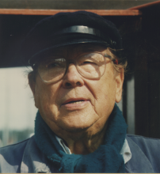

Please note: the AAS Obituaries are temporarily being hosted on this website while their full content is being ingested into the PubPub publishing platform newly adopted by the Bulletin of the American Astronomical Society. When the migration is complete, your existing links will take you to the final, migrated content. Contact peter.williams@aas.org with any questions.
Olof E. H. Rydbeck (1911-1999)
Olof Rydbeck died on 27 March 1999. He was the founder of Onsala Space Observatory and one of the world's pioneers of radio astronomy during its rapid growth after World War II. While at Harvard in the late 1930s, he became interested in the ionosphere and its effects on wireless transmission; in 1940 he finished his doctoral thesis on radio wave reflection from the ionosphere. In his subsequent research at Chalmers he found interesting perturbing and fading effects occurring at the time of solar flares — work that Lovell and Clegg cited in 1950 in an early treatise on radio astronomy.
In order to pursue the ionospheric observations from a radio quiet environment, Olof set up a field station in Stora Askim in 1943. Because of its more interesting northern location in the Auroral zone, however, he moved the station to Kiruna in 1948, thereby founding the Kiruna Ionospheric Observatory. Around this time, he led a Chalmers team to observe a major solar eclipse which was total in Sormjole (near Umea) and later his group drove a busload of electronic equipment to observe another eclipse in Naples in 1952.
Of course, radio propagation studies needed transmitters. He produced them in his group at Chalmers where he also developed special purpose vacuum tubes and travelling wave tubes. In 1948 he actually wrote a paper on "The theory of the travelling wave tube."
It was in the late 1940s that Olof became interested in higher frequency observations and true observational radio astronomy. He must have cut a very impressive figure at that time with his exciting new ideas and his enthusiasm for researching the cosmos. Major Herbert Jacobsson, a fellow member of the Göteborg's Kungliga Vitterhets och Vetenskaps Sarnhiille (KVVS), donated a stretch of land at Råö. That was where the Onsala Space Observatory was founded in 1949-1950.
Now Olof had somehow found time to become aware of a number of German World War II radar antennas in Norway. He negotiated with the appropriate authorities, again receiving help from high places and had no fewer than five of these so called Würzburg antennas shipped down to Gothenburg and thence to Råö. All were in place and in use by 1955. The first was fitted with instruments to observe another solar eclipse which was 99% total at Råö in 1954. Perhaps the most important use of a Würzburg antenna, however, was in the observation of neutral hydrogen from the Galaxy. The amount of work involved in mounting the five antennas must have been enormous and it is a great credit to Olof's talent as a leader that they were erected, assembled and used by a team of only half a dozen people.
Olof's ambition for a larger telescope grew. Other observatories were building bigger telescopes and it was important to stay in the race. He set out to find funding for a 25-m antenna. With help from Skandinaviska telesatellit kommitten and Malmfonden he was able to finance the 25-m telescope that was built in 1964. By some standards this was still a small telescope (e.g., Jodrell Bank by that time had a 76-m antenna). Nevertheless, Olof had not neglected the other important component of a radio astronomy system: the receiver. In his Chalmers laboratory, he had initiated research and development in very sensitive receivers-microwave amplifiers working on the same principle as lasers. These "maser" receivers were indeed world class, making the 25-m observing system very competitive in its operating wavelength range.
This period was very important for the observatory. Developments during the next decade established Onsala as a world-ranking observatory and set the stage for the future. These investigations were molecular spectroscopy at radio wavelengths — Rydbeck's group made the first detection of the CH molecule in interstellar space — and the decision to invest effort into Very Long Baseline Interferometry. Together with the US National Radio Astronomy Observatory in West Virginia, Onsala conducted the first transatlantic VLBI experiment in 1968, achieving a resolution of 1 milliarcsecond.
What next? Olof's insatiable ambition to do better and better observational work drove him to want to build a replica of a new German telescope at Råö. This instrument was the lOO-m antenna of the Max-Planck Institut für Radioastronomie, that had been built in the Eifel mountains. However, this project proved to be too much even for Olof. When it was clear that the Research Council would not fund it, he turned immediately to another idea — perhaps his finest — to enter a new technological era with a millimeter-wavelength telescope. This telescope was realized with help from NFR and the Wallenberg foundation and was opened by the King in 1976. This was a world-ranking project again, and the telescope became only the second operational millimeter antenna in the world and the largest at that time.
During this time of the 20-m project, Olof's enthusiasm for millimeter astronomy had become infectious. While on a sabbatical at the University of Massachusetts he was very influential in persuading them to drop everything and follow suit. They built a 14-m millimeter-wave antenna. My colleague Paul Goldsmith, Director of the US National Ionospheric Observatory at Arecibo, wrote recently: "I visited Amherst (University of Massachusetts) for the first time in 1974 when the 14-m telescope was under construction there, and was told about this 'Swedish dynamo' who had gotten people at UMASS so worked up about the potential of millimeter wavelengths that they had switched focus from low-frequency pulsar work to high-frequency molecular observations."
The two main areas pushed by Olof — millimeter molecular line astronomy and VLBI — gave Onsala Space Observatory a high international profile, especially as a strong technical group. With that background, we have been able to continue his work and maintain our world ranking position with a submillimeter wavelength antenna in the southern hemisphere (SEST). Also, we have been among the pioneers of the highest resolution VLBI. We are now playing a leading role in a multi-million-dollar US/European project to build a very large millimeter telescope array high in the Chilean Andes.
Olof Rydbeck was an engineer, physicist, spectroscopist, geophysicist — he was even interested in cosmology — but above all he was a man who got things done. He will be remembered as a pioneer, a builder of instruments, and a man of ideas. He was also a man of great general knowledge, which he often liked to demonstrate. Many are the staff and students at Råö who have been "caught" after a colloquium and listened to his reminiscences for several hours, sometimes missing their bus! But he was a charmer, a man with a sense of humor and a great character. He will be missed by us all.
Obituary written by: Roy Booth (Onsala Space Observatory, Sweden)
BAAS Citation: BAAS, 2001, 33, 1580
SAO/NASA ADS Bibcode: 2001BAAS...33.1580B